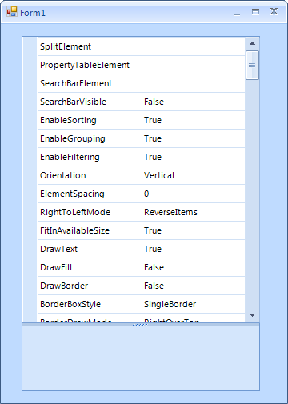
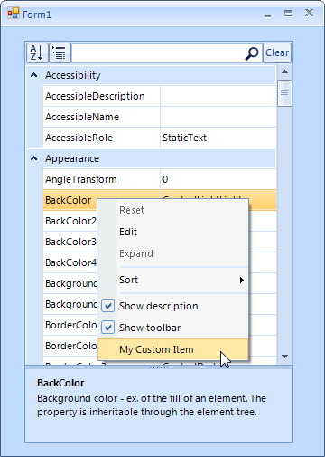
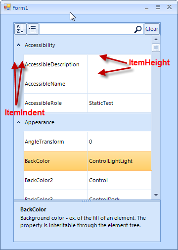

Getting Started
| RELATED VIDEOS | |
| [ Getting started with RadPropertyGrid ](http://tv.telerik.com/watch/winforms/getting-started-with-teleriks-radpropertygrid) | RadPropertyGrid provides an easy and versatile approach to processing data objects' properties. Utilizing its autogeneration features and the intuitive custom editors capabilities, users would be able either to display data in a way that best fits their needs or modify it with minimal effort. RadPropertyGrid can be bound to an item with just a single line of code and you may start exploring or editing its properties. The property editor controls are auto generated - text fields for string properties, DateTimePickers for dates, ComboBoxes for enums and Booleans, RadColorPicker for colors. In addition, RadPropertyGrid allows flexible manual settings and customization of editors. RadPropertyGrid also supports scrolling operations via touch interface. |
The following example will demonstrate the basic functionalities of RadPropertyGrid control.
Let’s start with adding RadPropertyGrid control to a RadForm. In the code behind we will set the
SelectedObject property of the control to an object, which properties we
want to display. For the sake of this example we will use the element of the control – PropertyGridElement.
[C#] Setting the SelectedObject of RadPropertyGrid
radPropertyGrid1.SelectedObject = new PropertyGridElement();
[VB.NET] Setting the SelectedObject of RadPropertyGrid
RadPropertyGrid1.SelectedObject = New PropertyGridElement()
It is all set and RadProperyGrid reads all public properties of the given object and displays them:

Now, let’s customize the example a bit and take advantage of some of its features. As you can see in the image above,
on the bottom of the control a help section is displayed. This section reads the name and the content of the
Description attribute of the selected property. The section visibility is controlled by
the HelpVisible property and it is turned on by default.
Next, we will add a predefined toolbox on the top of the control. This toolbox contains of two buttons –
for alphabetical sorting and for grouping the items (grups are created by reading the Category
attribute of the SelectedObject properties) – and also a text box used for filtering
the property grid. All this functionality comes out of the box by simply setting the ToolBarVisible
property to true:
[C#] Showing the tool box on the top of RadPropertyGrid
radPropertyGrid1.ToolbarVisible = true;
[VB.NET] Showing the tool box on the top of RadPropertyGrid
RadPropertyGrid1.ToolbarVisible = True
Additionally, since the toolbox consists of a StackLayoutPanel, is supports adding additional elements.
Here is how to add a button that clears the filter text box:
[C#] Add element to toolbox
RadButtonElement clearFiltering = new RadButtonElement();
clearFiltering.Text = "Clear";
clearFiltering.MinSize = new System.Drawing.Size(25, 22);
clearFiltering.StretchHorizontally = false;
clearFiltering.Click += new EventHandler(clearFiltering_Click);
[C#] Clear the filter
void clearFiltering_Click(object sender, EventArgs e)
{
radPropertyGrid1.PropertyGridElement.ToolbarElement.SearchTextBoxElement.Text = "";
}
[VB.NET] Add element to toolbox
Dim clearFiltering = New RadButtonElement()
clearFiltering.Text = "Clear"
clearFiltering.MinSize = New System.Drawing.Size(25, 22)
clearFiltering.StretchHorizontally = False
AddHandler clearFiltering.Click, AddressOf clearFiltering_Click
[VB.NET] Clear the filter
Private Sub clearFiltering_Click(ByVal sender As Object, ByVal e As EventArgs)
RadPropertyGrid1.PropertyGridElement.ToolbarElement.SearchTextBoxElement.Text = ""
End Sub
By default, opening the editor for editing is done by double clicking the editor. This behavior can be easily changed
by selecting one of the predefined options of the BeginEditMode property. The options to choose
from are follows:
BeginEditOnClick – the editor is opened on the first click
BeginEditOnDoubleClick – the editor is opened on double click
BeginEditoProgramatically – the editor can be opened only programmatically (by calling BeginEdit() method)
[C#] Selecting the begin edit mode
radPropertyGrid1.BeginEditMode = RadPropertyGridBeginEditModes.BeginEditOnClick;
[VB.NET] Selecting the begin edit mode
RadPropertyGrid1.BeginEditMode = RadPropertyGridBeginEditModes.BeginEditOnClick
To set the default sorting or grouping of the properties, just set the PropertySort property,
to one of the enumerated values:
Alphabetical – sorts the properties according to the SortOrder setting
(Ascending or Descending)Categorized– groups the properties according to their Category attribute
CategorizedAlphabetical– groups the properties according to their Category
attribute and sorts them Alphabetically, according to the SortOrder setting
(Ascending or Descending)None – removes sorting and grouping
[C#] Group by categories
radPropertyGrid1.PropertySort = PropertySort.Categorized;
[VB.NET] Group by categories
RadPropertyGrid1.PropertySort = PropertySort.Categorized
You can control the sort order, by setting the SortOrder property of the control.
Possible values are Ascending, Descending and None:
[C#] Setting the sort order
radPropertyGrid1.SortOrder = SortOrder.Ascending;
[VB.NET] Setting the sort order
RadPropertyGrid1.SortOrder = SortOrder.Ascending
There are also four properties that allow you to control the expand/collapse image of the control. These are as follows:
CollapseImage, ExpandImage, HoveredCollapseImage
and HoveredExpandImage.
The selection of the items is controlled by either setting a certain item to the SelectedGridItem
property, or by calling the Select() method of an item.
Accessing and modifying the default context menu, can be achieved by accessing the RadContextMenu property
of the control. For more information on how to work with menu items, please refer to our
Menu section.

There are a few properties that you can set in order to change the item appearance:
ItemHeight - sets the visible items height.
ItemSpacing - sets the spacing between the items.
ItemIndent - sets the indent space in the beginning of the items.
At the end, if you want to expand all groups automatically, you can set the AutoExpandGroups to
true (which is also the default setting).